遊びで植物を育てよう
2025/05/19
去年の6月に挿し木したバラが咲きました。

木が小さくて枝がひょろひょろなんですけど、きれいな花が咲きました。
このバラは今後どうしようかな？植えるスペースがあれば地植えにするんだけど、何かが枯れるとかしないと植える場所は出来ないんだな。鉢のサイズを一つ大きくするくらいしかできないかな。
【バラTOP】
【木TOP】
【園芸TOP】
2025/01/02
今年もお正月にバラが咲いています。
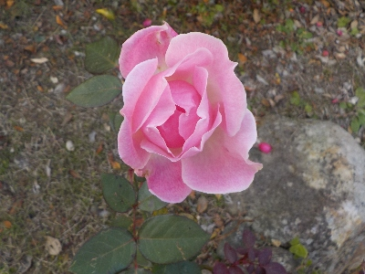
四季咲きのバラはいいな。いつでも咲いてて。
ゼラニウムやカーネーションも年中咲いているんだけど、バラは特別目立つな。なんでだろう？
【バラTOP】
【木TOP】
【園芸TOP】
2024/12/07
ペットボトルのバラが窮屈そうだったので鉢上げしました。
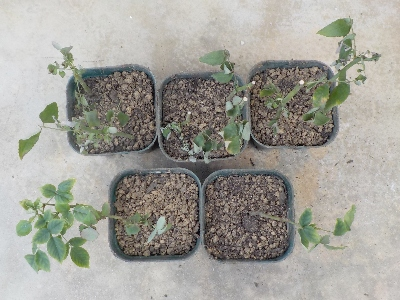
手前の2本は8月に挿し木したバラです。
奥のは10月にツルバラっぽいのを挿し木したものです。以前からあったんですが日陰にあったため、たまにしか咲いていませんでした。
両方とも冬に葉っぱを落とすタイプなので、冬が越せるかちょっと不安です。
【バラTOP】
【木TOP】
【園芸TOP】
2024/10/06
6月に挿し木したバラを鉢上げしました。
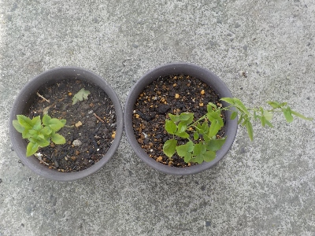
秋らしく涼しくなったのでバラをペットボトルから出しました。
早く大きくなって花が咲くといいんだけどな。
8月に挿し木したバラも青々しているので、そのうち鉢上げかな。
【バラTOP】
【木TOP】
【園芸TOP】
2024/08/17
バラの挿し木を追加しました。
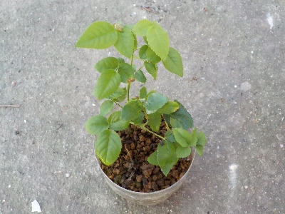
6月に挿し木したバラです。
青々としているのでたぶん根っこが出ているでしょう。
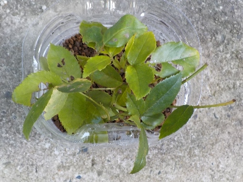
追加で同じものをまた挿し木しました。予備用です。
6月の挿し木はもうちょっと涼しくなったら鉢上げします。
【バラTOP】
【木TOP】
【園芸TOP】
2024/06/28
バラは花弁が少ない方が好きです。
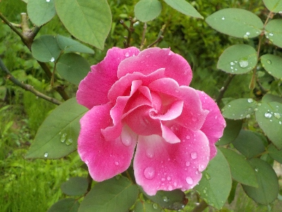
これくらいの花弁の数が好きかな。
とってもいい感じだ。
【バラTOP】
【木TOP】
【園芸TOP】
2024/06/16
バラを剪定した枝で挿し木をしました。

このバラの開花がほぼ終わったので、剪定しました。
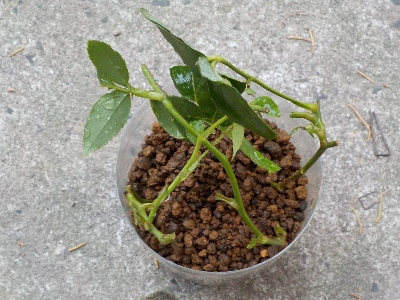
切った枝で挿し木しました。ペットボトル使用の密閉挿しです。
去年地植えのバラが１本枯れたので、挿し木が成功したらそこに植えようと思っています。
【バラTOP】
【木TOP】
【園芸TOP】
2024/05/20
バラの挿し木。
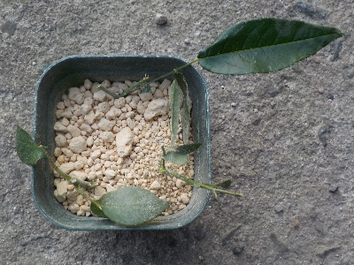
切り花の白いバラを手に入れたので挿し木にチャレンジです。
ちょびっとしかないので育つか不安です。
【バラTOP】
【木TOP】
【園芸TOP】
2024/05/05
バラの季節になりました。

四季咲きなのでいつでも咲いてるバラですが、今の時期が1番花が大きいです。
花びらが多くて豪華な感じがしますね。でも厚いのはそんなに好きじゃないかな。
【バラTOP】
【木TOP】
【園芸TOP】
2023/12/30
元旦に白いバラの花が見れそうです。
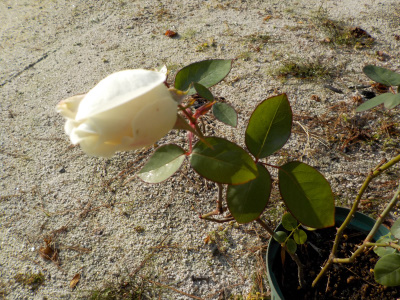
只今バラの花が開花中です。
3日間くらいはキレイに咲いてるんじゃないかな。
ピンクのバラも一緒に咲いたら紅白でめでたい感じでしたが、今回は白だけです。
【バラTOP】
【木TOP】
【園芸TOP】
2023/05/13
終わったバラの花を取り除きました。

花が終わったものが多くなったので、切り取りました。
木を高くしないために、枝を多めにカットしました。
【バラTOP】
【木TOP】
【園芸TOP】
2023/05/08
バラの花の中に虫がいました。
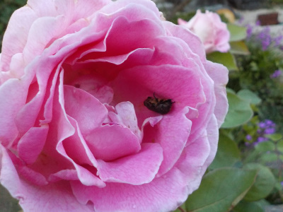
まるっこくて固そうな虫がいました。コガネムシかなと取り出したらカメムシでした。
ネットで検索したら、カメムシはツボミや花びらを食べるそうです。害虫ですね。
【バラTOP】
【木TOP】
【園芸TOP】
2023/04/22
複雑な花びらのバラが咲きました。
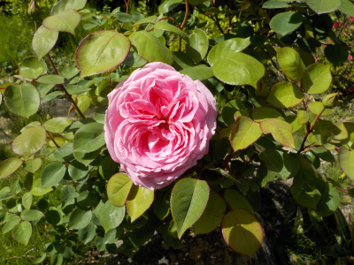
花びらが真ん中で分かれています。ダブルセンターって言うそうです。
これはこれで面白いのでよしとします。
【バラTOP】
【木TOP】
【園芸TOP】
2022/07/31
このバラは植えた場所が良かったみたいで、しょっちゅう咲いています。
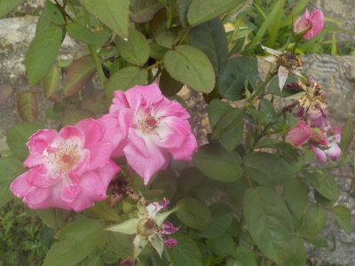
このバラはよく花が咲いています。日当たりがいい場所に植えたのが良かったのかな。
【バラTOP】
【木TOP】
【園芸TOP】
2022/05/22
地植えにしたバラは成長が速いです。
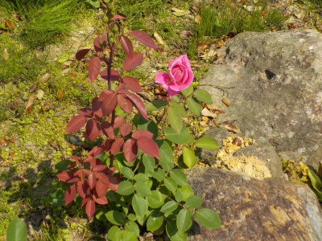
挿し木で増やしたバラなので、成長が遅いとか病気になりやすいんじゃないかと思っていたんですが、今のところすくすく育っています。
枝がしっかりしているみたいで、花が上を向いててカッコいいです。
【バラTOP】 【木TOP】 【園芸TOP】
2022/05/22
温暖化でバラがとっても重そう。
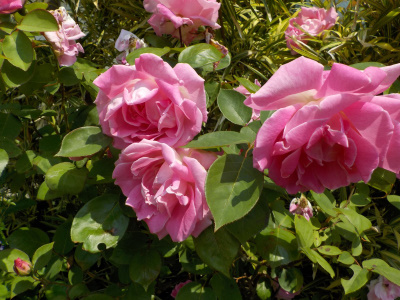
温暖化で冬が暖かいと、バラの花が肥大するって勝手に決めつけて思っています。
なんとなーくブヨブヨしてる感じがする。
【バラTOP】 【木TOP】 【園芸TOP】
2022/05/14
バラの花が重たそうです。
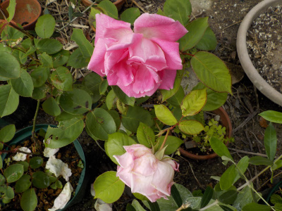
挿し木で増やしたバラはまだ小さいので、花がとっても重そう。
バランスが悪いです。
綺麗に咲いてるので、それくらいどうってことないですけど。
【バラTOP】
【木TOP】
【園芸TOP】
過去の記事
2022/05/08
母の日のバラ。
2021/09/26
挿し木のバラを活用
2021/09/19
挿し木したバラが花を咲かせました。
2021/05/09
今年は母の日くらいがバラのピークです。
2021/04/04
水挿しのバラっから芽が出ました。
2021/03/28
バラの挿し木を鉢上げしました。
2021/03/21
ペットボトルで挿木したバラが次々と葉を出しています。
2020/08/13
水挿しのバラに出っ張りが出来ていました。
2020/07/12
バラの花が終わった枝で水差しをしてみます。
2020/05/04
今年もバラが綺麗です。
【バラTOP】
【木TOP】
【園芸TOP】
買うなら白いバラかな。
【おいしいものを食べよう。】【たくさん寝よう。】
【ソロ活をしよう!】【季節感のあることをしよう。】【動画視聴はほどほどに。】【当サイトの全てのコンテンツは無断転載禁止です。】